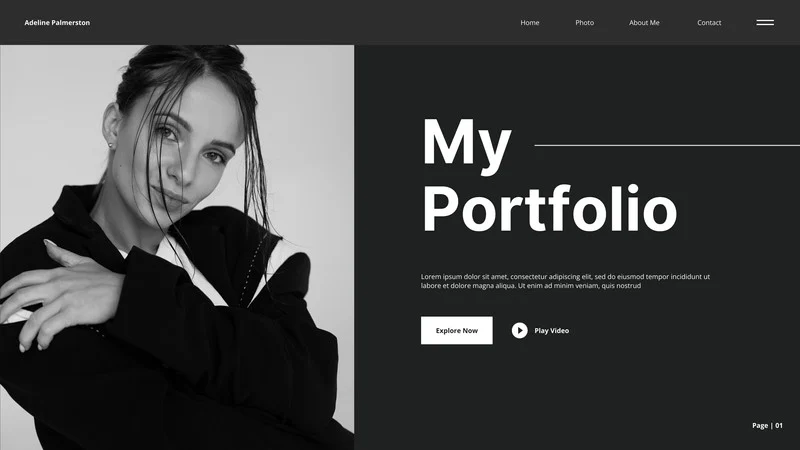
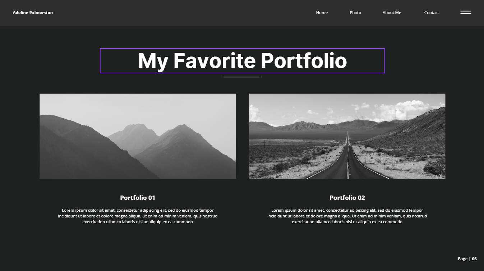
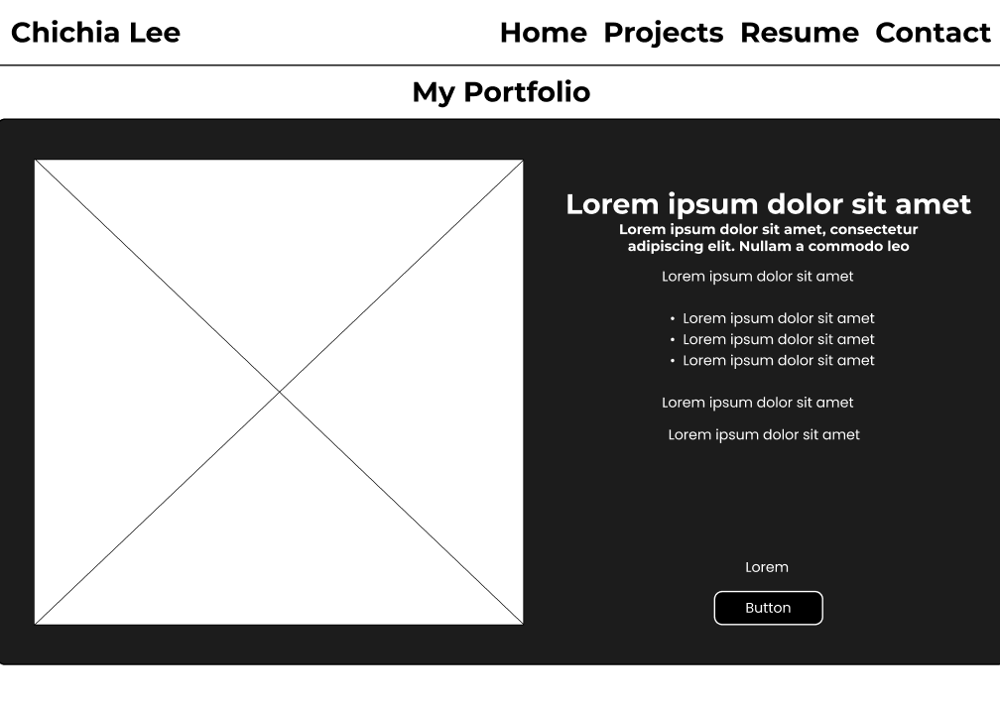
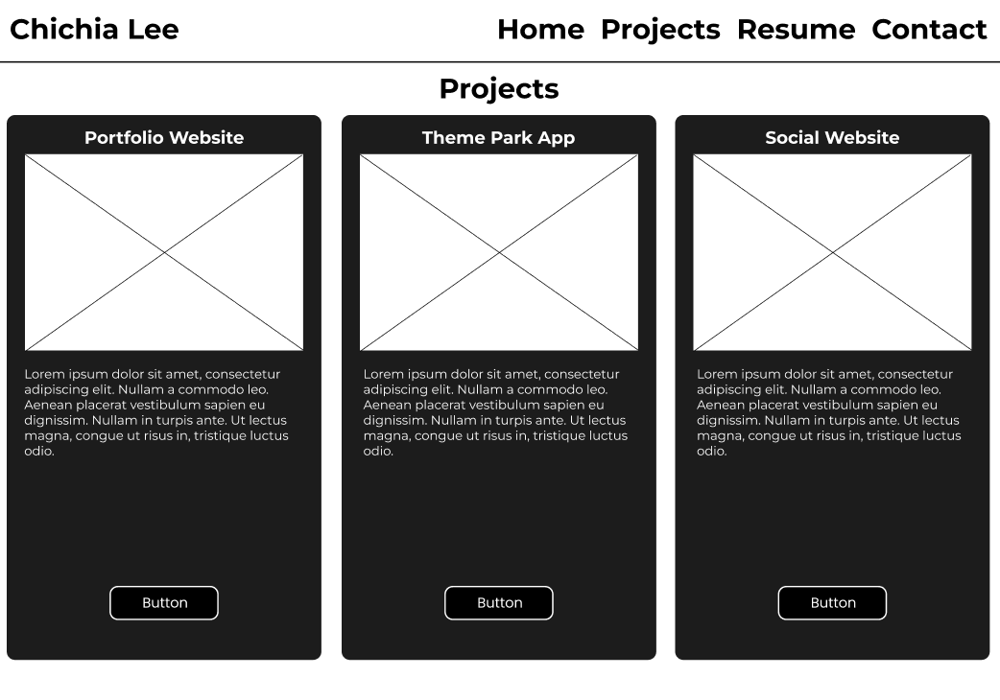
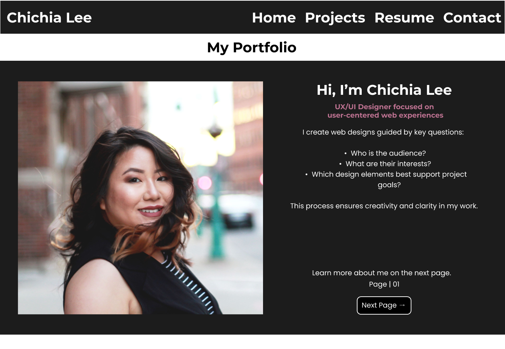
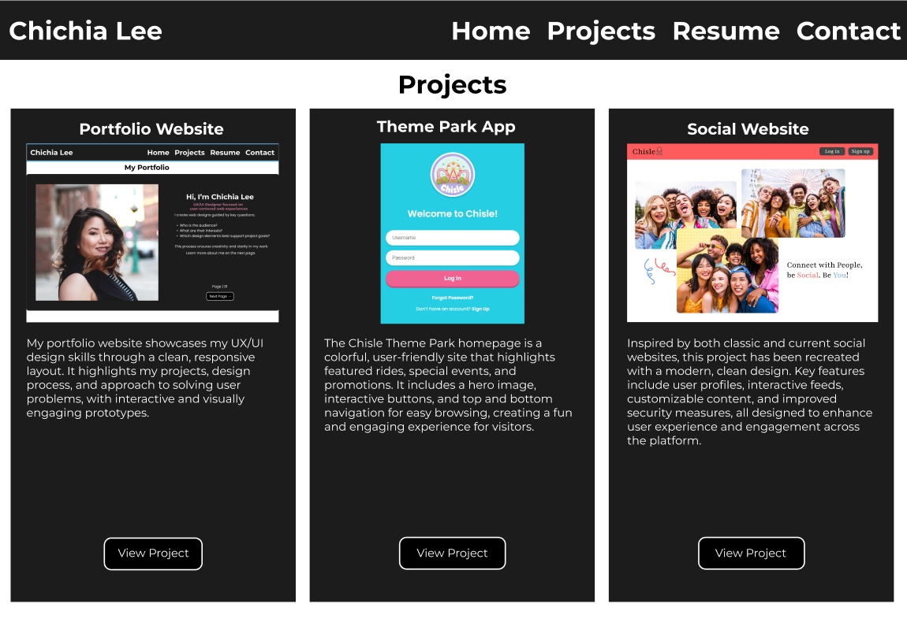
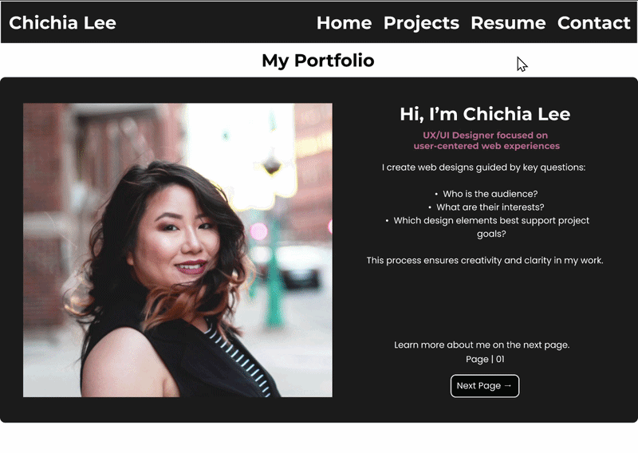
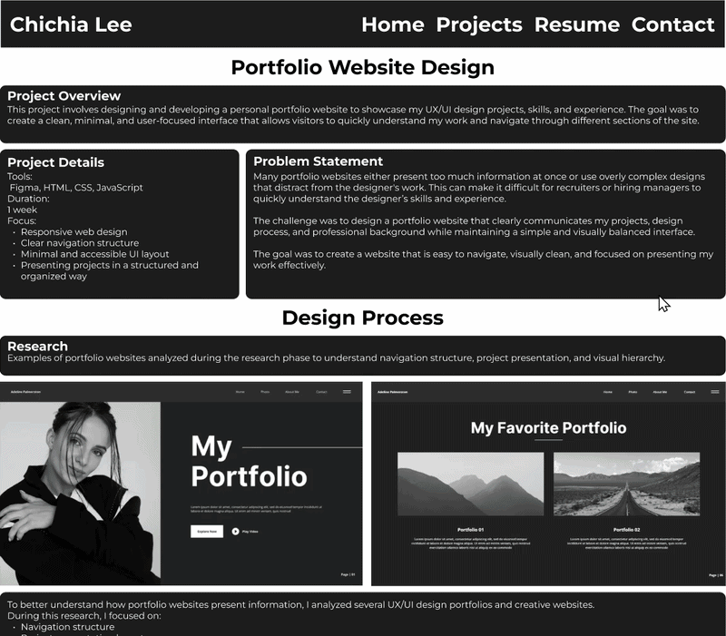

Project Overview
This project involves designing and developing a personal portfolio website to showcase my UX/UI design projects, skills, and experience. The goal was to create a clean, minimal, and user-focused interface that allows visitors to quickly understand my work and navigate through different sections of the site.
Project Details
Tools: Figma, HTML, CSS, JavaScript Duration:2 weeks Focus: Responsive web design Clear navigation structure Minimal and accessible UI layout Presenting projects in a structured and organized way
Problem Statement
Many portfolio websites either present too much information at once or use overly complex designs that distract from the designer's work. This can make it difficult for recruiters or hiring managers to quickly understand the designer’s skills and experience. The challenge was to design a portfolio website that clearly communicates my projects, design process, and professional background while maintaining a simple and visually balanced interface. The goal was to create a website that is easy to navigate, visually clean, and focused on presenting my work effectively.
Design Process
Research
Examples of portfolio websites analyzed during the research phase to understand navigation structure, project presentation, and visual hierarchy.
- Figma – wireframing and visual design
- Adobe Photoshop – image editing
- HTML & CSS – layout development
- JavaScript – interactive elements
- Google Fonts – typography
Research
I analyzed popular social media platforms to identify common layout patterns and usability issues. This helped inform the structure of the redesigned interface.


To better understand how portfolio websites present information, I analyzed UX/UI design portfolios and creative websites. During this research, I focused on: Navigation structure Project presentation layout Visual hierarchy Typography and spacing Use of minimal design From this research, I identified several best practices: Clear navigation helps users quickly find important sections. Project cards allow users to scan work quickly. Minimal color palettes reduce visual distractions. Large headings and structured content improve readability. These insights helped guide the layout and structure of my portfolio design.
Wireframes
Low-fidelity wireframes created to plan the layout, navigation structure, and content hierarchy of the portfolio website.


Low-fidelity wireframes were created to explore different layout options for the website. These wireframes focused on organizing the core sections of the portfolio, including: Home page Projects Page The wireframes helped determine how content should be arranged and how users would navigate between pages. Special attention was given to the placement of navigation bar, project cards, and call-to-action buttons to ensure an intuitive user flow.
Visual Design
Developed high-fidelity mockups with a minimal design system emphasizing clean spacing, clear typography, and consistent visual hierarchy.


Prototype
The prototype was designed in Figma using high-fidelity mockups, following a minimal design system that emphasizes clean, balanced spacing, legible typography, and a consistent visual hierarchy. The design focused on creating an intuitive user experience by prioritizing content, establishing clear focal points, and maintaining visual consistency across colors and layout components.


Key Takeaways
This project strengthened my understanding of how visual hierarchy, spacing, and typography impact usability. It also helped me practice translating UI designs from Figma into a responsive web layout using HTML and CSS.